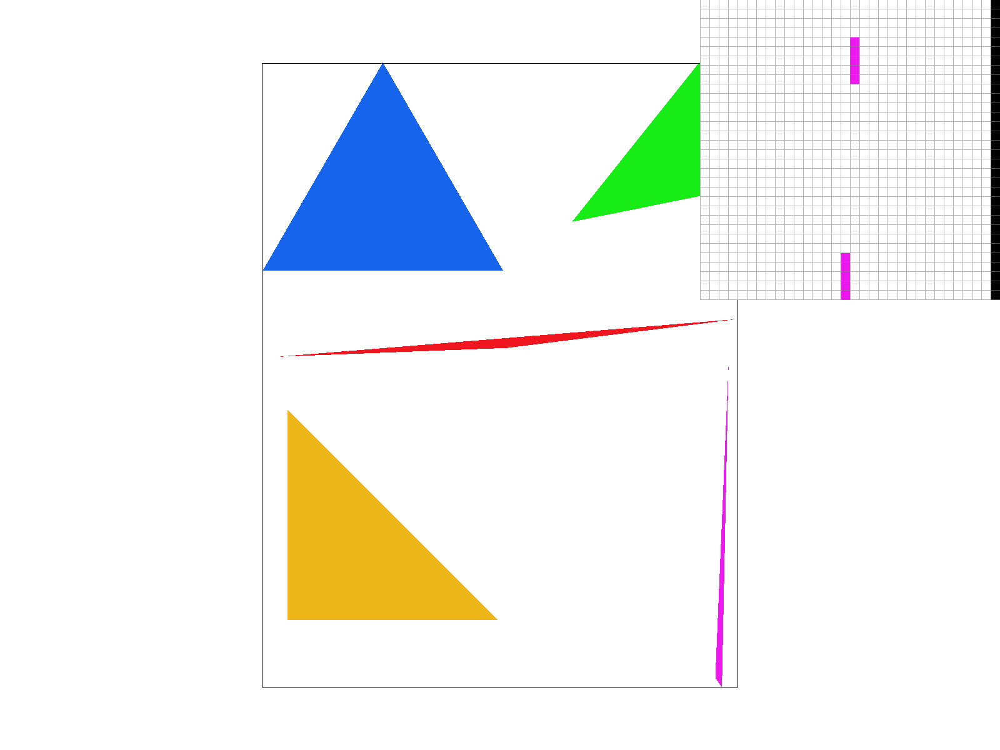
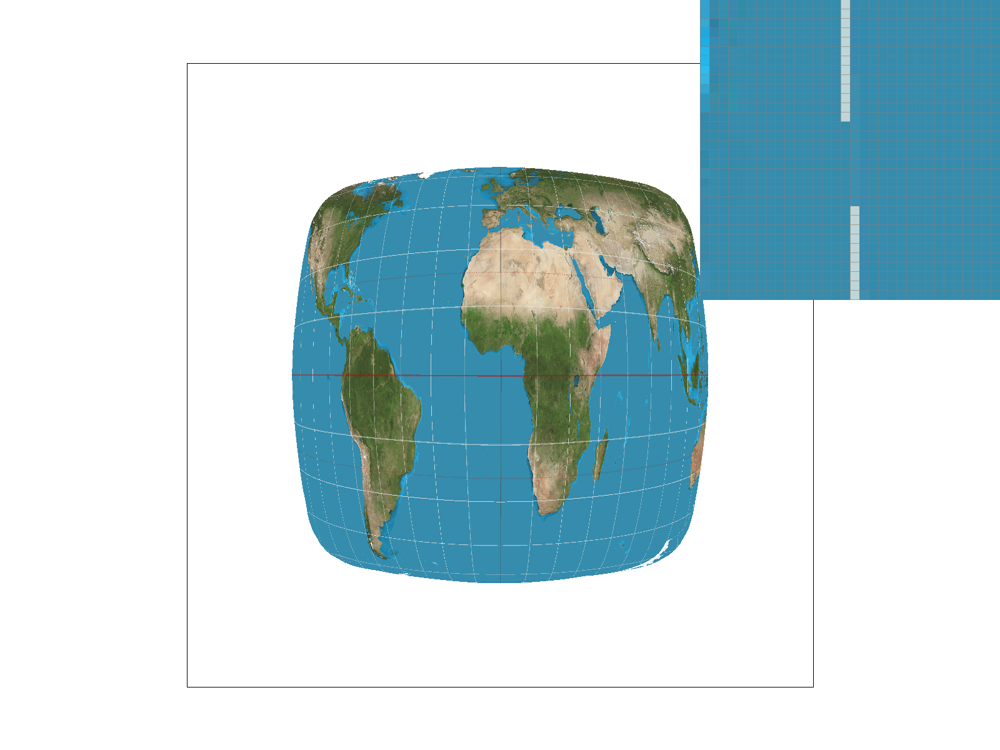
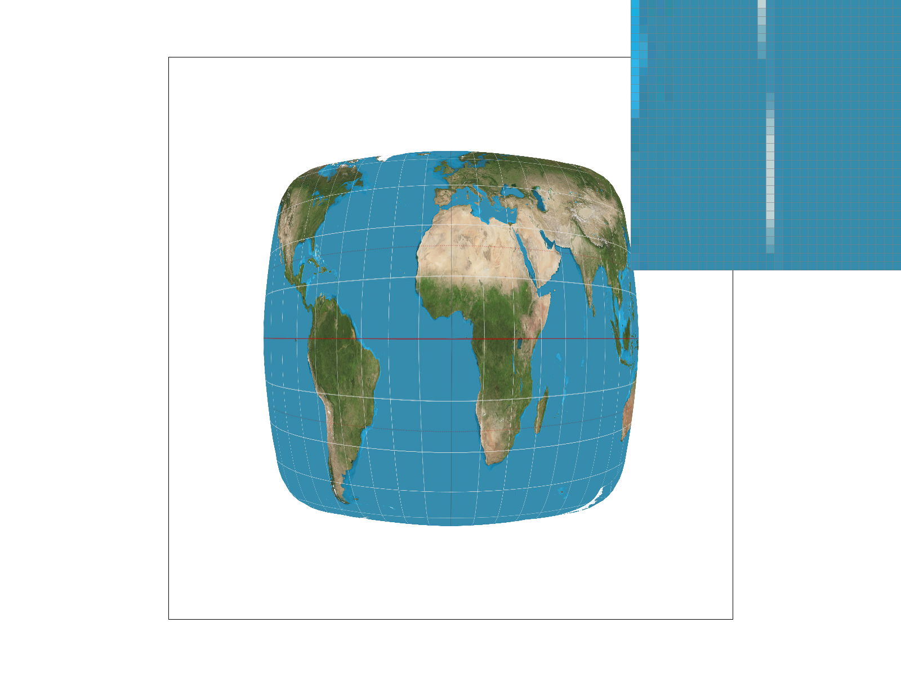
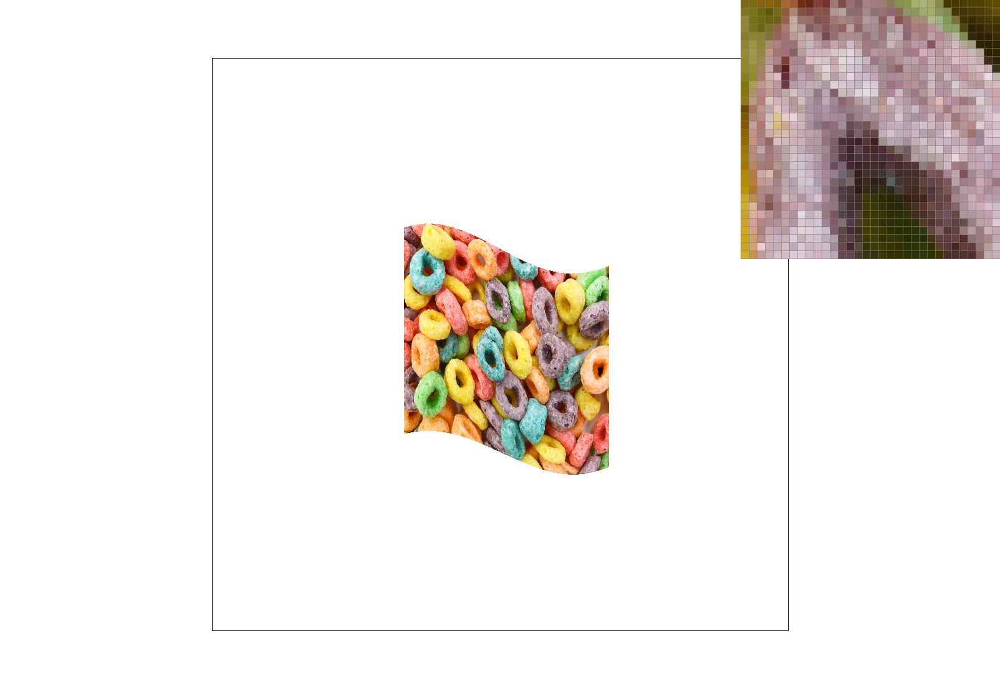
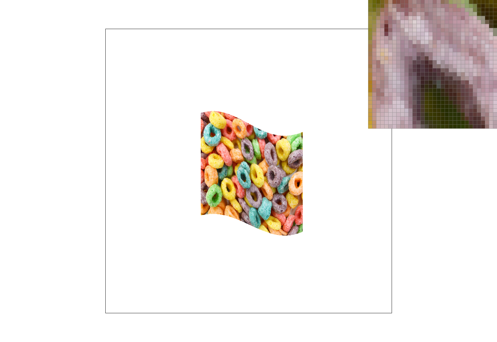

For this task, we are given as input 3 pairs of floats: (x0, yo), (x1, y1), (x2, y2) representing the coordinates of the three vertices of a triangle, along with a Color c, representing the color of said triangle. Our final algorithm performs these steps:
The variables left_x, bottom_y, etc. represent the edges of the square which encapsulates the triangle. In other words, they can be considered the bounds which are guaranteed to cover every point of the triangle. This makes our algorithm an implementation of bounding box.
Our algorithm for supersampling is built off our algorithm for simple samples, but with a couple updates.
A sharp triangle corner when sampled with rates of 1, 4, and 16 respectively.
Just as seen in Task 1, rendering artifacts like jaggies and disjoint components are a setback of using the basic sampling algorithm. Supersampling seeks to address these artifacts by allowing for pixels to be be filled in "partially". Softer colors are used along the edges to create a more seamless transition along the boundaries of two solid colors. As we increase the sampling rate, we observe tighter bounds along which the softer colors are drawn.
Our robot is giving a lecture on the blackboard to a crowd of students. Perhaps in the not-so-distant future, a robotic copy of Professor Ren will give lectures on rasterization and transforms in his place.
Barycentric coordinates are a way of representing a point in a triangle as a set of distances from each of its vertices. Each coordinate value ranges from 0 to 1, where a 0 indicates that the point lies on an edge formed by a given vertex, and a 1 indicates that the point lies on the edge facing away from the given vertex. They are incredibly useful for rendering as they allow us to utilize texture maps, as we will explore in Task 5.
A rasterized triangle with vertices colored Red, Blue, and Green respectively. For any point along the triangle, the color of said point can be described as a proportinate sum of its three barycentric coordinates.

A color wheel, made possible through barycentric coordinates!
Pixel sampling allows us to ascribe a texture map to a geometric object (composed of rasterizable triangles). For this task, we are given the coordinates of a triangle in screen space (x0, y0, x1, y1, x2, y2), the coordinates of the same triangle in texture space (u0, v0, u1, v1, u2, v2), and a texure tex. On a high level, our goal is to take points inside the triangle in screen space, find their corresponding point on the texture map through barycentric interpolation, and sample the color at that point to fill in our buffer. Our algorithm performs the calculations necessary to achieve this goal:
We have to bear in mind that unless both coordinates of uv are integers, there will be no single point in tex that corresponds to uv. More likely, uv will fall somewhere between 4 points in tex. This is the motivation behind the sampling techniques that we use to retrieve a color from the texture map. When it comes to sampling the color at a given point in the texture map, there are two options that we choose from: nearest neighbor and bilinear interpolation.
Though more computationally expensive, bilinear interpolation will often produce better results than nearest neighbor, as illustrated in the following example:
 Nearest neighbor sampling with sampling rates of 1 and 16 respectively. Even with a sampling rate of 16, these lines of longitude still appear disjoint.

Bilinear interpolation sampling with sampling rates of 1 and 16 respectively. Already we see that interpolating with a sampling rate of 1 defeats nearest neighbor sampling by drawing longitude lines that are continuous. By increasing the sampling rate, the lines get drawn in a way that better captures their curved shape.
From this example, we can draw the conclusion that differences between the two methods will beomce most prevalent when sampling textures that feature high frequencies (color which changes dramatically over a short distance). Bilinear interpolation addresses these high frequency shifts by approximating an intermediate color between two colors which sharply contrast. In the map example, the high frequency change would be going from the blue ocean to the white longitude line.
Level sampling is a technique which aims to reduce aliasing in the sampling of a single texture, and is motivated by the observation that objects which appear closer will appear to have a higher resolution than objects that appear further. To perform level sampling, we will store multiple "levels" of a single texture, each level representing a version of the texture that is of a lower resolution than the level before it. We have updated our algorithm to calculate the level that should be used for each rendered point, where the final color that is sampled is based on which level sampling method we use. We calculate the level for each pont as follows:
One observation is that D is not guaranteed to be an integer, which is to say that there is no guarantee that the point in question fits perfectly into a level that actually exists. Thus, we refer to one of our various level sampling techniques for addressing this. We have three options to choose for level sampling techniques: L_zero, L_nearest, and L_linear.
In terms of speed, L_zero is the fastest as it is equivalent to the case of no level samplin, followed by L_nearest which requires reading one texture map, with L_linear as the slowest, having to read two texture maps.
In terms of memory usage, L_zero is the cheapest as it only requires storing a single texture map. L_nearest and L_linear are equally expensive as they both require the storing of N texture maps, where N is the total number of levels we want.
In terms of aliasing prowress, L_zero is the weakest as it assumes the same frequency across all samples. L_nearest is second best, as it allows for high frequencies to be filtered out to an extent based on level. L_linear will usually provide the best results, as interpolation is a powerful tool which allows for us to calculate an intermediary color in cases where there are high frequency changes.
Fruit loops rendered using L_zero and P_nearest. Parts of the image take on a grainy appearance.
Even when switching to P_linear, the aliasing issue persists.
Switching over to L_near and P_near, we notice a drastic imporvement with much smoother visuals. This illustrates that our choice of level sampling technique played a bigger role than out choice of texture sampling technique.
Finally, by reintroducing P_linear, we create an even smoother result. In conclusion, for certain situations, level sampling techniques can deliever more major improvements, while texture sampling offers more fine-grain improvements.